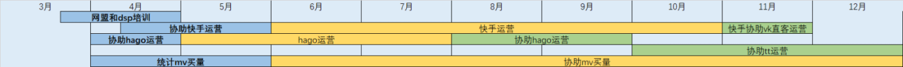
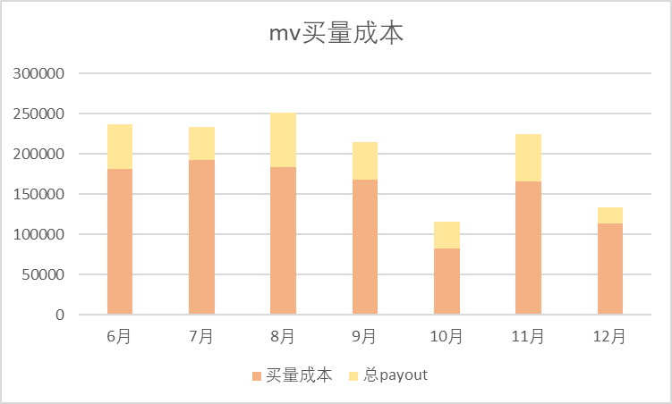
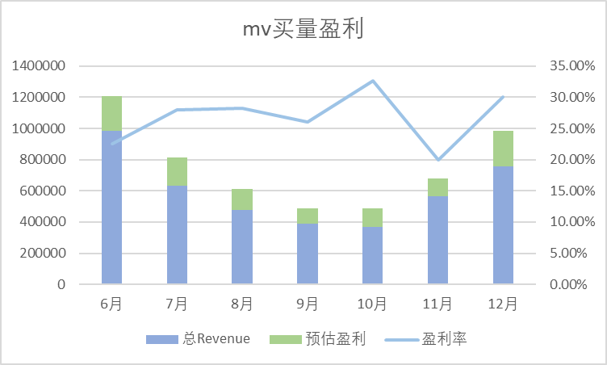
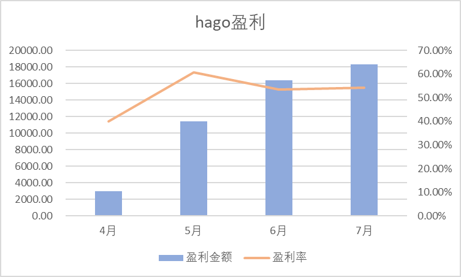
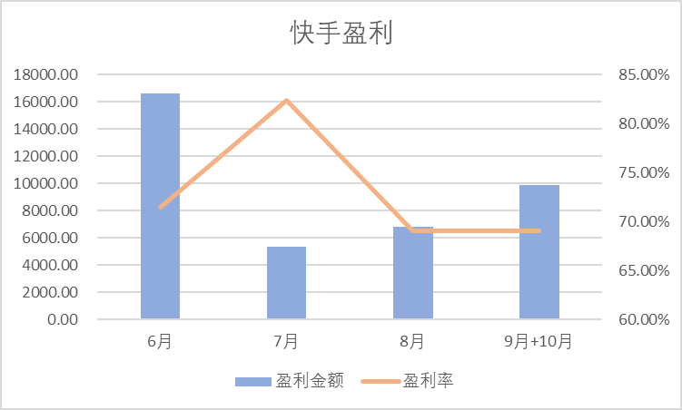

6-12月间，开始协助一起控制mv买量。
在7、8月间和10月初多次进行cpc成本调整。左图为买量总成本变动情况，在cpc单价稳定后逐渐控制降低买量成本。右图为买量盈利情况，中间因cpc单价变高导致整体盈利下降，但在之后对各国买量成本调控，目前盈利再次呈上涨趋势。1月将会与vk分开买量成本，预计整体盈利将会有所增长。
 
【腾讯文档】MV买量各地区统计 https://docs.qq.com/sheet/DV05wb2VUSXBSeW55?tab=jc3bo1
【腾讯文档】MV自有量TOP单子点击使用情况(周三) https://docs.qq.com/sheet/DV1BxUU90QnVMVm9l

在运营期间盈利金额稳步上涨，盈利率保持在50%以上。
【腾讯文档】Hago 日常假量+次留报告 https://docs.qq.com/sheet/DSnpyQW14aldvWW1F?tab=tsdqr6
日统计——每日盈利情况，若亏损分析原因；周统计——分类型看渠道盈亏情况及是否达kpi标准。
【腾讯文档】快手作弊数据整理 https://docs.qq.com/sheet/DV0ZwaUprcWF0bUVy?tab=beere5

【腾讯文档】Tiktok 日常自研核减报告 https://docs.qq.com/sheet/DR01wd3pRQ2FQQnNG?tab=pvtp2y
【腾讯文档】Tiktok BI Gap Rate https://docs.qq.com/sheet/DR0NTcnJ5SndwcEN0?tab=lkq1kd
【腾讯文档】TT直客数据-Fly内部 https://docs.qq.com/sheet/DZlh4QUxEcmdoR1Fl?tab=BB08J2
【腾讯文档】Tiktok流量占比&自有量盈亏分析（周四） https://docs.qq.com/sheet/DR3FMTlZLSW5YZExv
【腾讯文档】点击Gap 统计 https://docs.qq.com/sheet/DZE5sTFpTd0RjZ1Jh
【腾讯文档】tt-pa,次留及工作室占比 https://docs.qq.com/sheet/DSk5Va2FzTHNxSnhw
为方便TT整体数据观察，自制可视化图表：Tiktok可视化